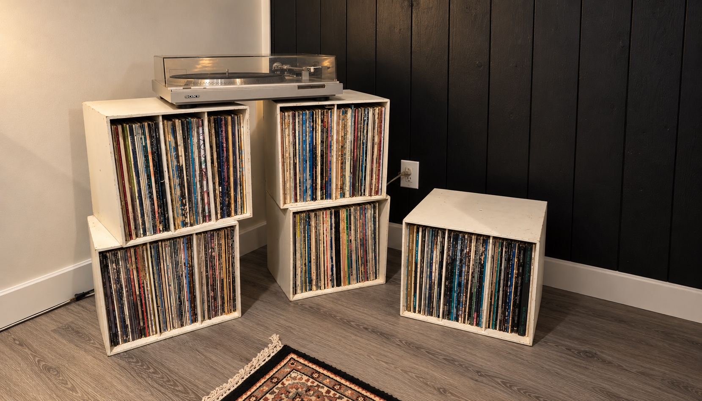

The collection, just as it was
Same boxes. Same well-loved sleeves. A new way to listen again.
Recreated from family photographs ⓘ
Choose a spine, or browse the sleeves below.Pull out a record to take a closer look.
Dad’s record room
Loading Spotify…
Spotify controls embedded playback. If it stays in preview mode after signing in, use Open album in Spotify.
Use Spotify’s play button to start. Minimize to keep listening while you browse.
A family collection
This room is a photographic reconstruction of the five boxes in your family photos. Records stay in their original left-to-right order.
Readable spines identify the albums. Cover artwork represents the album, and may come from a different pressing. Worn, unreadable sleeves keep their place until more photographs can identify them.
Back covers appear only where sourced. The vinyl inside is an illustration; labels and condition of the original discs haven’t been photographed.
Spotify albums are linked only when verified. Other records offer a clearly labeled Spotify search.
Photograph the remaining sleeves ↗